All made with my own hands—sewn by me, made for me! As u can see I <3 corsets and grommets... Click each piece to enlarge
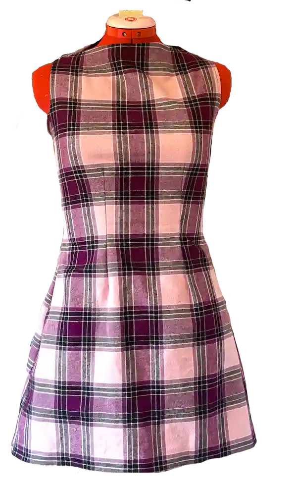
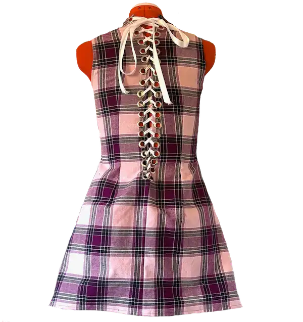
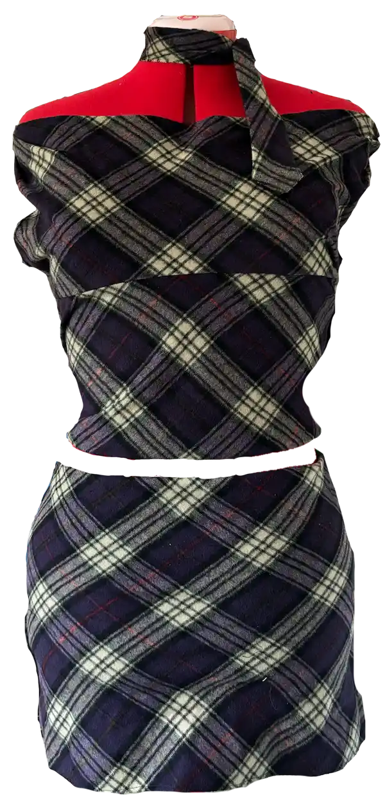
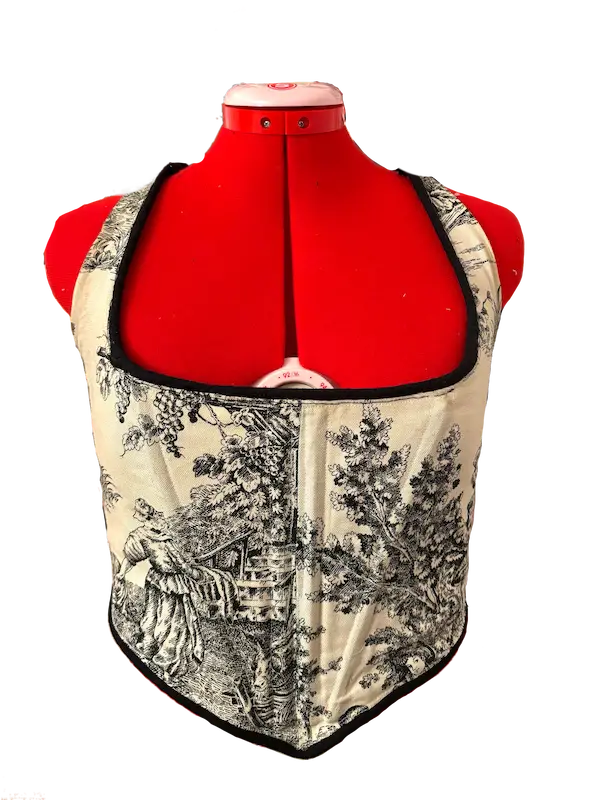
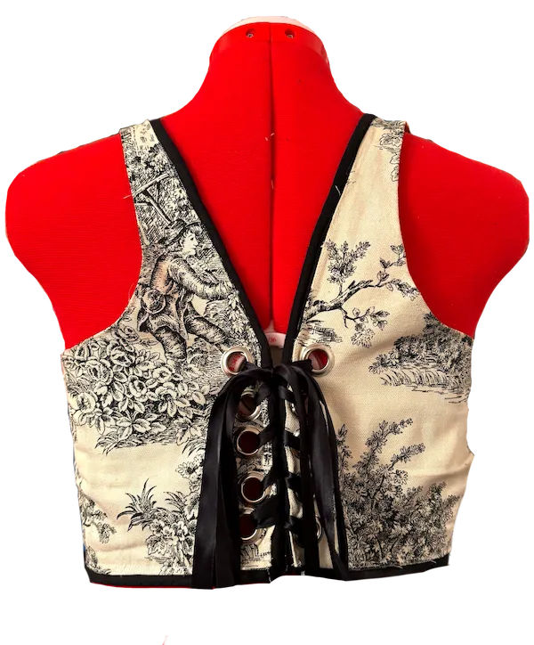
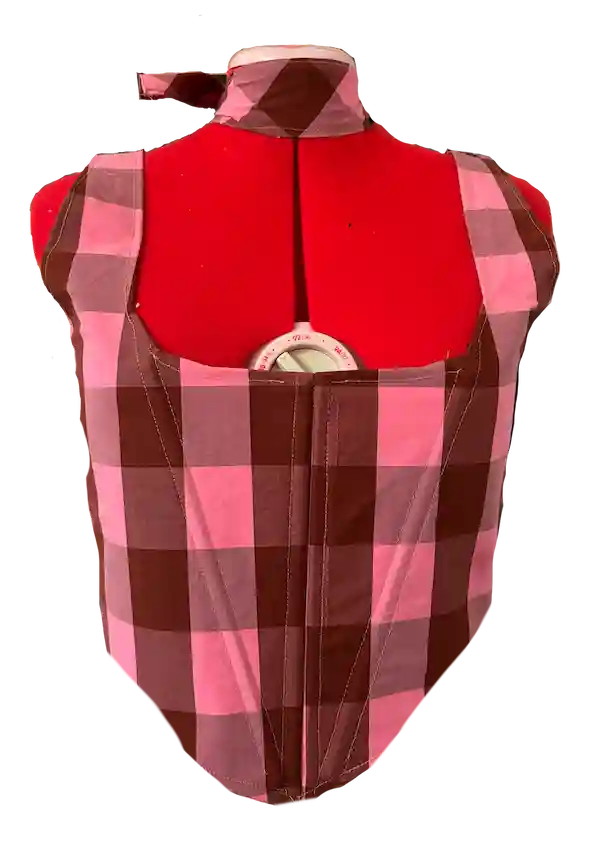
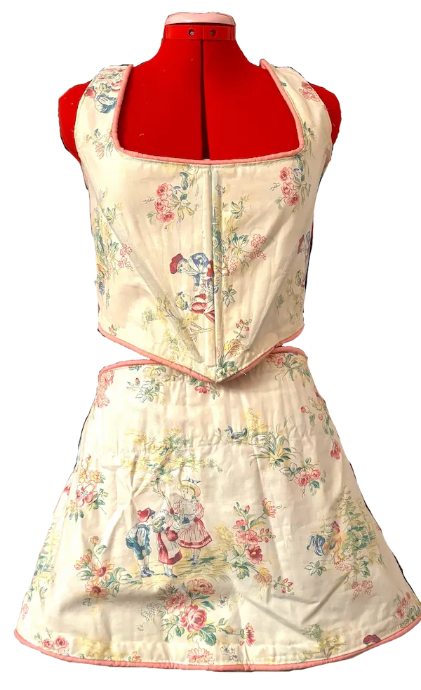
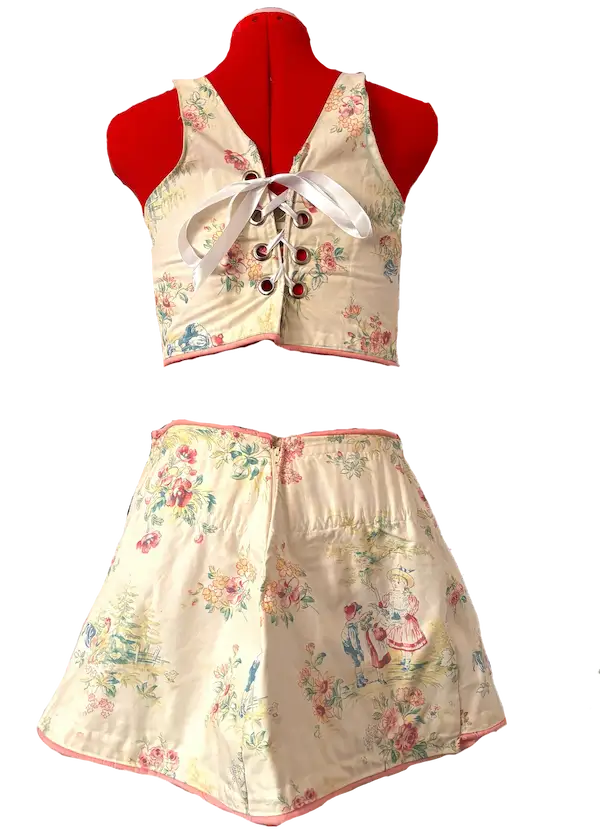
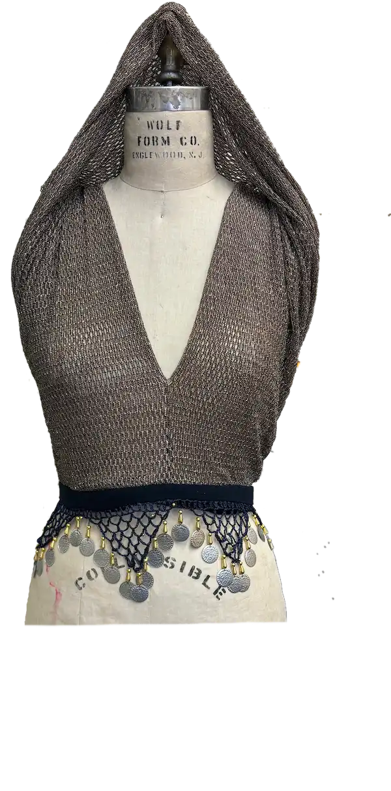
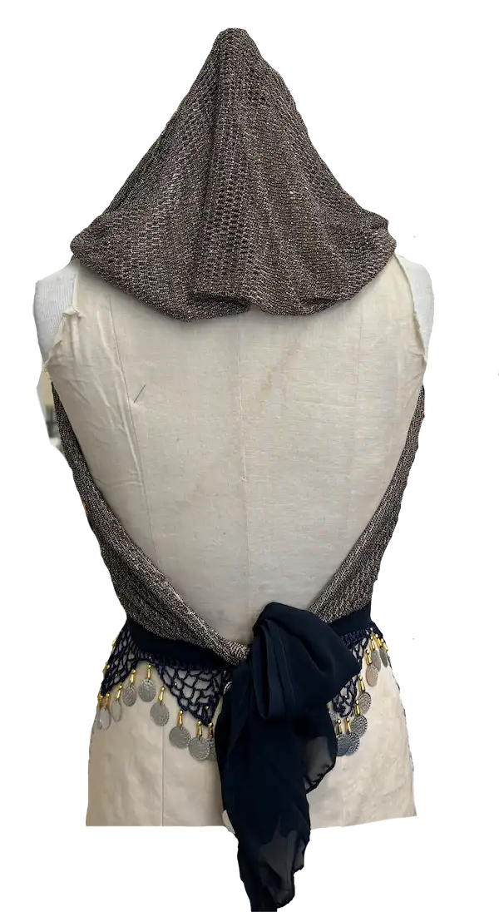
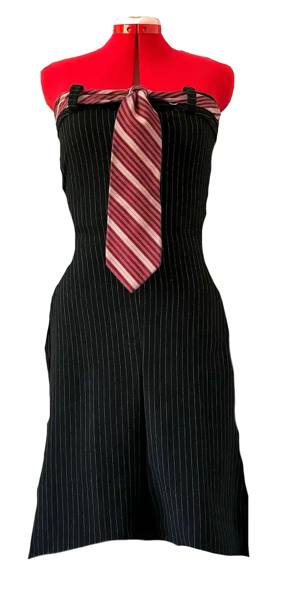
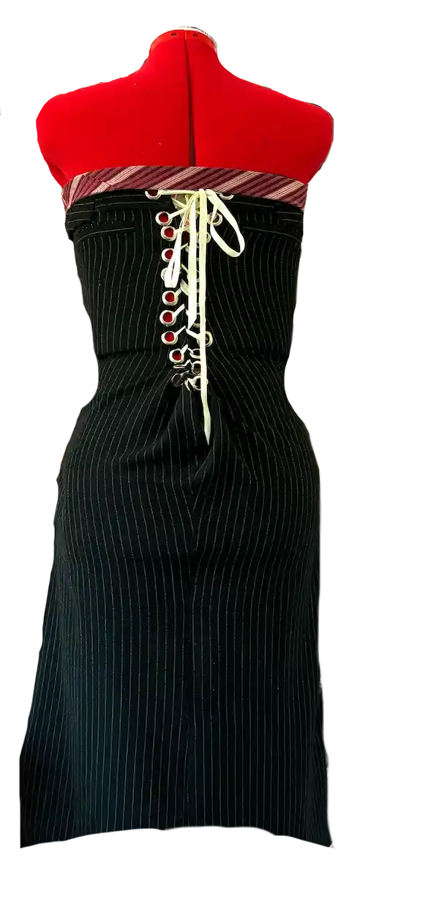
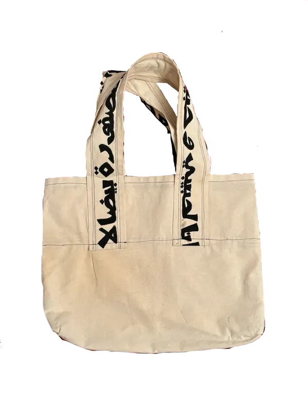
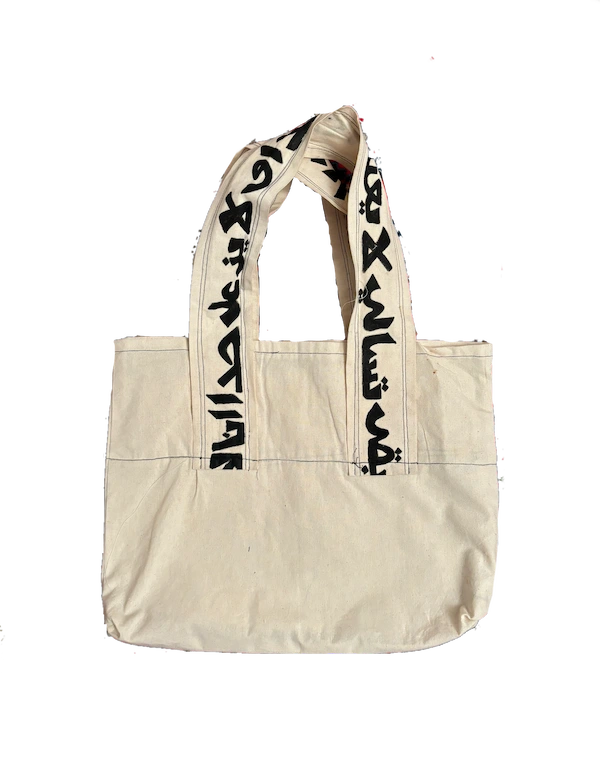
Click on arrows to view slideshow & click on pages to enlarge!
A Syrian liberation book. My final assignment from Design I! These are all images from my Jan 2025 trip to Syria & read the forward to learn more.
BAD MUSLIM magazine—final project from my theology class! In my second paper, I wrote about cosmetic surgery as a religious practice; this zine is basically a visual version of that + interviews from members of the community.
ALiBRi is a zine Bri and I made together—the first zine I ever made! In this collab, we shared/reimagined/annotated each other's pieces. check out Bri's version here
Select works that I'm proud of. Click on the animal to read!
September-December 2025
The Literacy Review is an annual journal (digital + print!) that publishes works of adult education students across NYC. While the editing work has yet to begin (though I am deep in my reading selections as we speak!), we spent the last semester writing these reflections. I am super duper proud of this and what is to come.
December 2025
Analysis of Beer in the Snooker Club (1964) in the context of Ngũgĩ wa Thiong'o's Decolonising the Mind (1986) and Edward Said's Orientalism (1978). I am proud of the way this paper grew and though I may be sick of writing about weird Arab men (i still luv u Edward Said!!), I had a lot of laughs writing this and more importantly, learned a lot.
December 2025
Analysis which seeks to place the 2024 pro-Palestinian encampments within Sarah Brayne's framework of policing and data technologies—through her case study with the LAPD—in Predict and Surveil (2020). I would def love to expand on this, but posting here for now.
October 2025
Wrote for Anglophone Middle Eastern Literature, placing Edward Said's famous work Orientalism (1978) in conversation with his memoir, Out of Place (1999). I feel like I haven't written a lit paper in forever, so this felt very fun and exciting.
April 2025
An essay on how the popularization of aesthetic surgery can be interpreted as its own religious practice, focusing on Muslim women and their relationship to cosmetic procedures.
March 2025
Intellectual Autobiography and Plan for Concentration, otherwise known as my sophomore year statement! A short little reflection.
February 2025
A comparative essay between mourning practices in Syrian Orthodox Christianity and Sunni Islam—this focuses specifically on Orthodox Christians and Sunni Muslims in Syria.
December 2024
Research paper which examines two self-elegies both about themes of death, grief, and transformation: Gustav Mahler’s Ninth Symphony (1912) and Mahmoud Darwish’s In the Presence of Absence (2006).
June 2024–Ongoing
Research paper that examines the absence of photography and documentation of the 1982 Hama Massacre. Here, I intended to create an archive to center rare civilian images and oral testimonies—many of which are from my own family.
*After the liberation of Syria from the Assad regime, I intend to continue this research in a totally new environment than where I started from—where state surveillance, censorship, and repression are no longer a threat.
November 2023 (published May 2024)
An analysis of how to integrate the framework of historian Mai M. Ngai’s Impossible Subjects (2004) within contemporary education systems—specifically in rethinking immigration history curricula.
الخط = calligraphy. click the painting 2 enlarge!
Kifak Inta, published in Confluence (2024)
Born Again, exhibited in the Gallatin Galleries (2025)
I LOVE U ADOBE ILLUSTRATOR <3 Most of these were made in my Design I class. Maybe one day I will start ALiA DOLLS!
Ceramics! Made at Sterling Hall. Probably the hardest yet most energizing art form I've experienced. You really can do anything or make anything in ceramics and I still have so many more ideas!